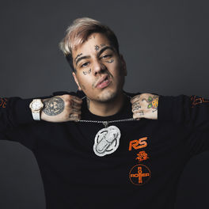
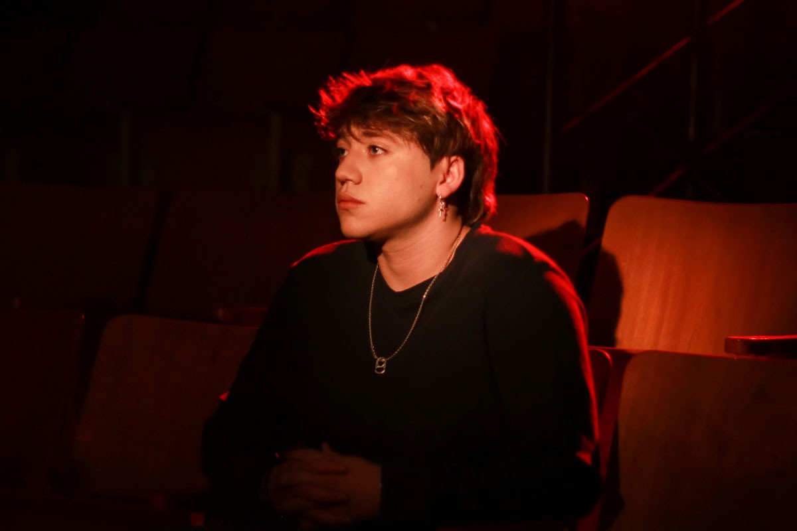

Duki |
|
Mauro Ezequiel Lombardo (Almagro, Argentina; 24 de junio de 1996), conocido artísticamente como Duki, también conocido como "Duko" o "el Duketo" es un cantante, trapero y freestyler argentino. Duki empezó a hacerse reconocido gracias a sus participaciones en las batallas de rap, ganando en 2016 la competición "El Quinto Escalón", la competición de rap más importante de Argentina en ese momento. Gracias a eso, lanzó su primer sencillo "No Vendo Trap" en 2016, y en ese año se retiró de las batallas para iniciar una carrera musical. Se unió a la discográfica Mueva Records, pero acabó desafiliandóse por sus diferencias con uno de sus productores. En 2018, formó un grupo de trap junto a los artistas YSY A y Neo Pistea llamado Modo Diablo. En 2019, lanzó su primer álbum discográfico, Super Sangre Joven, bajo el nombre de su sello discográfico del mismo nombre.Mauro Lombardo nació el 24 de junio de 1996 en Almagro, Buenos Aires, hijo de Sandra, una abogada especializada en derecho, y Guillermo, un diseñador gráfico. Tiene un hermano, Nahuel, especializado en ingeniería de sonido, y una hermana menor, Candela.1 Mauro se crio en La Paternal luego de que sus padres se divorciaran, y a pesar de haber concurrido a la escuela, jamás acabó la secundaria, ni tampoco pudo desarrollar la habilidad de poder escribir a mano.1 Duki comenzó a tener interés por el hip hop y trap latino a la edad de siete años. Escuchaba mucha variedad musical, pero sobre todo rap estadounidense, algo que le influyó de cara al futuro. El freestyle le llamó la atención luego de ver una batalla de rap entre los freestylers Kodigo y Tata, en una competencia llamada "A Cara de Perro" del 2010.1 Poco tiempo después, alrededor del 2012, empezó a incursionar en el mundo de las batallas de rap, empezando a concursar en diferentes competiciones.En 2013, Duki participó en su primera batalla de rap, junto a Salva, contra Monto y Ambro, en una competencia llamada Madero Free, donde salió victorioso. Duki también participó en una competencia underground llamada Unión de Zonas, donde enfrentó, junto a Felpa, a Dani y Elai. También regresó a Madero Free, donde volvió a enfrentar a Dani. Luego participó de otras competencias como Las Vegas Freestyle, Refugio. También por esta época sería parte de su primera crew, los Satuanorinos de Puerto Madero.1 Alrededor del 2015, empezaría a aparecer en El Quinto Escalón, una competencia que empezaría a popularizarse de manera desenfrada, y que además lo catapultaría a ser uno de los freestylers más reconocidos por su flow y musicalidad que aportaba. |
Paulo Londra |
|
Inició su carrera musical en enero de 2017 cuando lanzó su sencillo debut, «Relax»1, que luego de unos meses estaba posicionado como un hit argentino del año.5 Desde entonces empezó a componer y continuó lanzando canciones.6 A pesar de que sus inicios son similares a otros exponentes urbanos, Londra, a diferencia de otros artistas, evita tocar temas tales como violencia, misoginia, insultos o drogas en sus canciones. 7 Recibió un contrato de una discográfica multinacional, sin embargo, rechazó la oferta. Más tarde, firmó un acuerdo con Warner Music.8 En octubre de 2017, viajó a Colombia para trabajar con el productor Ovy on the drums y la discográfica Big Ligas.910 Ha participado en colaboraciones junto con la banda colombiana Piso 21 en la canción «Te amo»11 y con Becky G en «Cuando te besé».12 También ha recibido elogios por parte de personalidades como J Balvin.1 Es el tercer artista argentino en ingresar a la lista de Billboard Social 50, luego de Lali Espósito y Tini Stoessel.13 En julio de 2019, el artista Ed Sheeran hizo una colaboración con Paulo Londra en una de sus canciones «Nothing On You» que es parte del álbum No. 6 Collaborations Project del 2019.1415.Paulo Londra nació en Córdoba, Argentina el 12 de abril de 1998.1 Durante su infancia y adolescencia vivió en un hogar muy unido, su familia siempre estuvo junto a él y siempre recibió apoyo en su carrera musical.2 Su interés por el rap comenzó por una recomendación de su hermana de la película 8 Mile, protagonizada por Eminem. Sobre la película, Londra comentó que:aulo Londra es un cantante y compositor argentino de Rap y Trap, nacido en la ciudad de Córdoba, el 12 de abril de 1998. Su vínculo con el rap comenzó cuando vio el film “8 Mile”, protagonizado por la estrella americana de rap Eminem. A sus 13 años se presentó por primera vez en una competencia de Freestyle en la plaza Intendencia de su ciudad, en el torneo conocido como “Sin Escritura”. Como sucedió con otros colegas, como Lit Killah, Kodigo y Duki, se hizo conocido masivamente al ganar los prestigiosos torneos argentinos “El Quinto Escalón” y “A Cara de Perro Zoo”. |